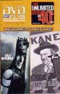

Novels
Exit Wounds The Honor Farm High Crimes Sweet Deal Ladies of the Night
"Westermann is definitely one of the best. Exit Wounds is highly recommended."
Jan Burke, author of Flight, Nine and Goodnight, Irene.
April 2006
{kind=link}
MURDER IN THE ROUGH
(Warner Books)
A collection of golf mysteries edited by Otto Penzler
including "The Secret" by John Westermann
Works in Progress
|
A mystery novel set in the Three Village area of Long Island's North Shore. | |
|
Co-author with Head Coach Joe Cuozzo of The Ward Melville Diaries, an in-depth diary of two seasons by the winningest high school lacrosse coach of all time. |
{kind=link}
(click on picture to enlarge)
Assistant coach Harold Drumm and head coach Joe Cuozzo, Mt. Sinai High School.
{kind=link}
Ferite Letali
An Italian translation of Exit Wounds is now available from international booksellers.
|
"Westermann produces gritty and wickedly funny books set in the sorry world of police work." Ellis Henican, Newsday | |
|
"Westermann writes the most humorous (but deadly serious) police procedurals on the market today." Bookbrowser.com | |
|
"Cop novel fans need to put Westermann's books on their required reading list." Booklist | |
|
"Exit Wounds is wildly funny.....A must for devotees of the raunchy, burnt-out cop novel." Publisher's Weekly | |
|
"Dark, anguished and authentic." Publishers Weekly | |
|
"A writing policeman in the Joseph Wambaugh tradition." Los Angeles Times |
John Westermann teaches Fiction Writing at Stony Brook University.
EXIT WOUNDS OPENED MARCH 16, 2001
#1 MOVIE IN AMERICA
#1 VIDEO RENTAL IN AMERICA
 View Hollywood Premiere and on-set pictures in Movie
{kind=link}
Personal Appearance
John Westermann and Nelson DeMille appeared at the Palmer Vineyards in Aquebogue, New York, for the "Writer on the Vine Series."
{kind=link}
John, Nelson DeMille and Larry Davidson, moderator extraordinaire.

Email: jw@johnwestermann.com
This page was last updated on 10/22/06.
Copyright © 2000-2005 Tigerose Networks. Send comments or inquiries to: webmaster@johnwestermann.com
On Location photographs by Tigerose Networks.
Times Square, New York photo by Oleg Ivantchikhin
Movie stills from Warner Bros.